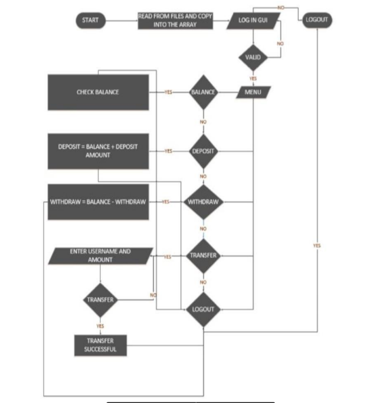

Security is the foundation of a good money transaction system. The aim of this
project is to develop the java based application to demonstrate the operations
performed by Customized Teller Machine.
This system will provide for secure authenticated connections between users
and the bank servers. The whole process will be automated right from PIN
(Personal Identification Number) validation to transaction completion.
The card details and PIN database will be a secure module that will not be open
to routine maintenance, the only possibility of access to this database will be
through queries raised from an ATM in the presence of a valid bank user.
